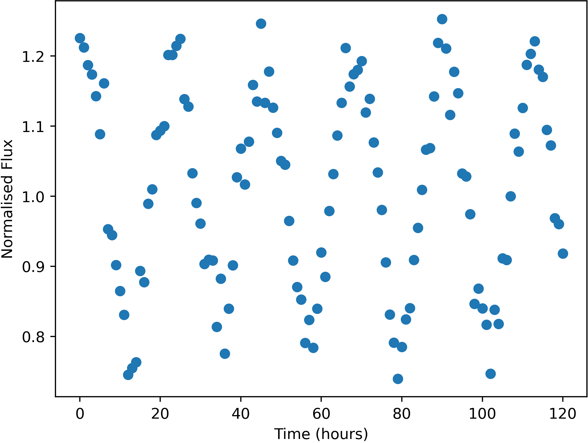

Some stars in the sky were found to change in apparent brightness over time, usually following a periodic trend.

Example of a variable star lightcurve - star FrontS114175
Units of the variable data are:
Uncertainties in this data (one standard deviation) are:
Here is a list of the flashes detected, with their approx. positions and number of photons detected. Positions are given by where they would appear in the relevant wide-field camera image. Positions are only accurate to 0.05 degrees (one standard deviation).
The X-Ray camera is sensitive to burts of more than 174 photons only.
| Name | Direction | X | Y | Photon-Count |
|---|---|---|---|---|
| FE01 | Bottom | -19.51 | 30.70 | 525 |
| FE02 | Right | -5.85 | -32.96 | 1075 |
| FE03 | Back | 13.01 | -27.67 | 487 |
| FE04 | Back | 9.52 | 20.90 | 888 |
| FE05 | Back | 11.27 | 4.25 | 393 |
| FE06 | Bottom | 38.64 | 7.57 | 791 |
| FE07 | Top | -25.88 | 1.73 | 444 |
| FE08 | Bottom | -25.06 | 44.69 | 385 |
| FE09 | Top | 24.27 | -12.95 | 558 |
| FE10 | Top | 1.42 | -12.17 | 459 |
| FE11 | Top | 35.04 | 0.83 | 1727 |
| FE12 | Back | 12.78 | -27.30 | 435 |
| FE13 | Right | -4.78 | 22.84 | 4589651 |
| FE14 | Front | 0.13 | 28.14 | 796 |
| FE15 | Back | -22.41 | -37.95 | 573 |
| FE16 | Right | -5.66 | -33.04 | 1053 |
| FE17 | Bottom | 38.27 | 7.46 | 793 |
| FE18 | Bottom | 23.86 | -0.86 | 482 |
| FE19 | Front | 20.27 | 25.92 | 415 |
| FE20 | Back | 22.05 | 43.69 | 389 |
| FE21 | Top | 36.08 | 15.32 | 18175164 |
| FE22 | Right | -4.74 | 20.34 | 607 |
| FE23 | Top | -25.68 | 1.28 | 474 |
| FE24 | Left | -31.79 | 33.61 | 485 |
| FE25 | Front | -41.05 | -26.07 | 5858 |
| FE26 | Back | 15.15 | 6.36 | 633 |
| FE27 | Front | 0.21 | 28.74 | 773 |
| FE28 | Right | -8.67 | 2.12 | 998 |
| FE29 | Left | 21.66 | 9.56 | 2437 |
| FE30 | Bottom | -19.35 | 30.26 | 559 |
| FE31 | Front | 10.10 | 8.86 | 114119 |
| FE32 | Top | 20.20 | 6.61 | 452 |
| FE33 | Bottom | -6.35 | -30.64 | 4184 |
| FE34 | Top | 38.85 | 32.14 | 347 |
| FE35 | Bottom | -5.02 | -35.08 | 96204 |
| FE36 | Back | 10.68 | 5.08 | 434 |
| FE37 | Back | 15.35 | 6.67 | 650 |
| FE38 | Left | -31.79 | 33.61 | 400 |
| FE39 | Back | 10.69 | 5.08 | 439 |
| FE40 | Top | 38.56 | 31.83 | 315 |
| FE41 | Top | -0.11 | -10.31 | 519 |
| FE42 | Top | 1.30 | -12.33 | 499 |
| FE43 | Bottom | 22.46 | 18.41 | 331 |
| FE44 | Bottom | 22.47 | 18.74 | 288 |
| FE45 | Bottom | -24.75 | 44.39 | 409 |
| FE46 | Back | -0.61 | 30.29 | 621 |
| FE47 | Right | 20.29 | 1.55 | 428 |
| FE48 | Front | 5.83 | 18.40 | 1353 |
| FE49 | Top | 29.57 | -8.83 | 1834 |
| FE50 | Right | -25.30 | 44.77 | 7273251 |
| FE51 | Right | -27.40 | -40.66 | 651 |
| FE52 | Back | -7.36 | -11.40 | 9552 |
| FE53 | Back | 15.18 | 6.57 | 679 |
| FE54 | Front | 41.55 | 1.05 | 794 |
| FE55 | Back | 13.08 | -27.27 | 457 |